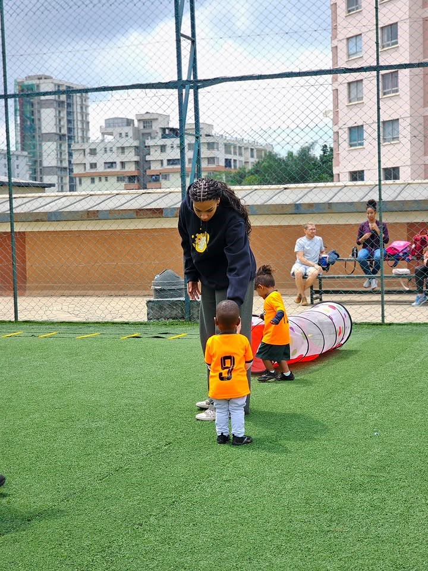
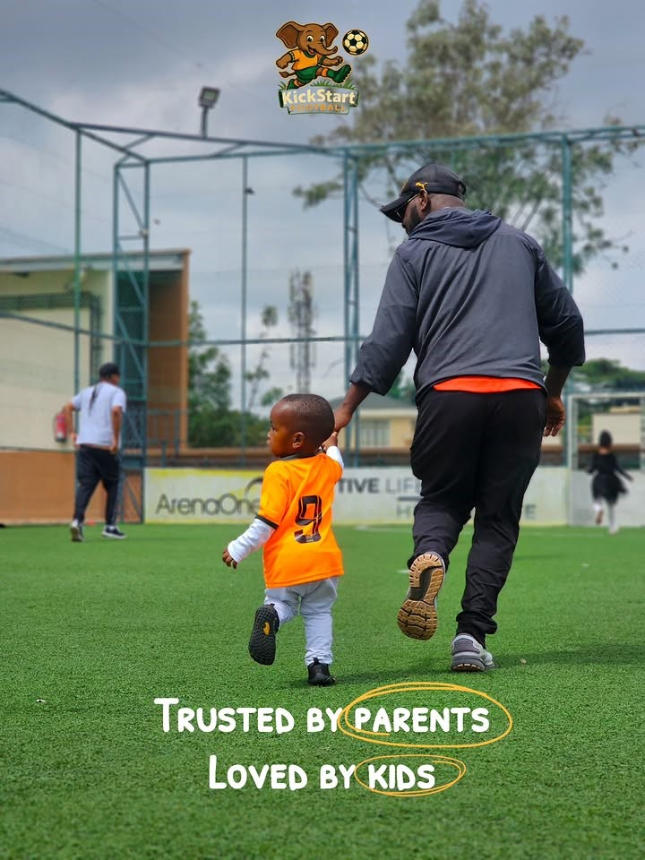
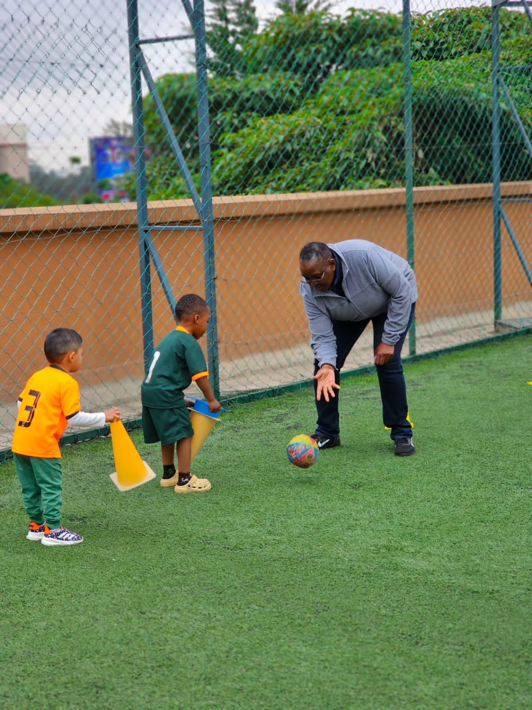

Little Kicks
A fun first introduction to football, designed especially for little feet.
Find a Class
A fun first introduction to football, designed especially for little feet.
Find a ClassLittle Kicks is designed for toddlers who are beginning to explore movement, play and the world around them.
Sessions combine simple football activities with imaginative games, helping children develop confidence while having fun.

At this age, football is about much more than learning to kick a ball.
Children can develop balance, coordination, listening skills and confidence through playful activities.
Every session is designed to keep little players moving, smiling and learning.
We start with simple activities that help children settle into the session.
Players discover the ball through games, movement and imagination.
Fun football activities encourage children to move and interact.
We finish with a positive activity that leaves everyone smiling.

Early football experiences can help children become more comfortable with movement, following instructions and interacting with others.
Find a local class and start their football adventure.